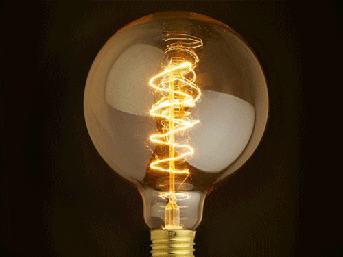

the Light Bulb
One of the everyday conveniences that most affects our lives, was not created in the traditional sense in 1879 by Thomas Alva Edison, although he could be said to have created the first commercially practical incandescent light. He was neither the first nor the only person trying to invent an incandescent light bulb. In fact, some historians claim there were over 20 inventors of incandescent lamps prior to Edison’s version. However, Edison is often credited with the invention because his version was able to outstrip the earlier versions because of a combination of three factors: an effective incandescent material, a higher vacuum than others were able to achieve and a high resistance that made power distribution from a centralized source economically viable. 